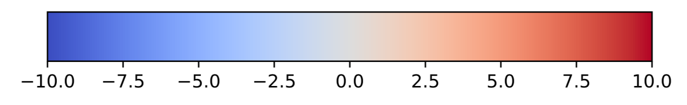

Running ORFold:#
Advanced run:#
Mapping of the fold potential and the disorder and aggregation propensities along the genome of an organism#
In the previous section we presented how to launch ORFold on a set of amino acid sequences stored in a FASTA file. However, the originality of ORFold relies on the fact that the user can manually inspect the distribution of the properties estimated with ORFold (fold potential, and disorder and aggregation propensities) along a genome of interest. In this case, the user must provide the genome annotation file (GFF) along with the input FASTA file. ORFold will return new GFF files (one per studied property) that contain for the ORFs provided in the input FASTA file, their corresponding property (fold potential, disorder or aggregation propensities). The values are stored in the column #9 of the output GFF files. The GFF files can be subsequently uploaded on a genome viewer such as IGV [1].
The input GFF file must be given with the -gff option as follows:
orfold -fna sequences.fasta -options HIT -gff sequences.gff
ORFold generates a sequences.tab file containing the fold potential, and the disorder and aggregation propensities of each sequence present in the input FASTA file. Additionally, ORFold produces three new GFF files:
- sequences_HCA.gff
- sequences_IUPRED.gff
- sequences_TANGO.gff
The output GFF files are identical to the one provided by the user except that for the sequences present at the same time in the FASTA and the GFF files that were given as inputs, the column #9 is now replaced by the fold potential, or the disorder or aggregation propensities estimated by ORFold. That way, the corresponding sequences can be colored according to these values on a genome viewer, thereby enabling the visual inspection of these properties along the input genome. Notice that on IGV, blue indicates low values (for all mapped properties) while red indicates high values.

Figure 1: Color scale for the HCA score values
Note
Notice that the ID of the sequences given in the FASTA file (i.e. annotation after the ">" in the FASTA file) must be strictly identical to those of the corresponding sequences in the GFF file (i.e. ID indicated in the column #3 of the GFF file).
Dealing with multiple files at the same time:#
ORFold can handle multiple input files (FASTA and GFF) and will associate the FASTA and GFF files according to the following rules:
-
If the user provides the same number of FASTA and GFF files, ORFold associates them based on their root name, no matter the order of the files.
orfold -fna sequences_Y.fasta sequences_X.fasta -options H -gff sequences_X.gff sequences_Y.gffIn this case, ORFold associates:
- sequence_Y.fasta with sequence_Y.gff
- sequence_X.fasta with sequence_X.gff
-
I If the user provides the same number of FASTA and GFF files, but their root names are not identical, ORFold associates them according to the order of the files in the command line.
orfold -fna sequences_Y.fasta sequences_X.fasta -options H -gff sequences_A.gff sequences_B.gffIn this case, ORFold associates:
- sequence_Y.fasta with sequence_A.gff
- sequence_X.fasta with sequence_B.gff
-
If the user provides multiple FASTA files and only one GFF file, then:
-
If the name of the GFF file matches with the name of one of the FASTA files, the two files are associated, while the other FASTA files are not associated to the input GFF file.
orfold -fna sequences_Y.fasta sequences_X.fasta -options H -gff sequences_X.gffORFold associates:
- sequences_X.fasta with sequences_X.gff
- sequences_Y.fasta with nothing
-
If the name of the GFF file does not match with any of the names of the FASTA files, then the GFF file will be associated with all the FASTA files, considering that the FASTA files correspond to different subgroups of the same dataset.
orfold -fna sequences_Y.fasta sequences_X.fasta -options H -gff sequences_B.gffORFold associates:
- sequences_Y.fasta with sequences_B.gff
- sequences_X.fasta with sequences_B.gff
-
-
If the user provides multiple FASTA and GFF files (but not the same number) , all GFF files must have a corresponding FASTA file with the same root name. Otherwise, ORFold will give an ERROR message.
orfold -fna sequences_Y.fasta sequences_X.fasta sequences_Z.fasta -options H -gff sequences_Z.fasta sequences_Y.gffORFold associates:
- sequences_Y.fasta with sequences_Y.gff
- sequences_Z.fasta with sequences_Z.gff
- sequences_X.fasta with nothing
orfold -fna sequences_Y.fasta sequences_X.fasta sequences_Z.fasta -options H -gff sequences_B.fasta sequences_A.gffORFold will give the following error message:
Oups! You provided GFF file(s) which has/have no correspondance to the input FASTA files
Running ORFold on subsets of randomly selected sequences#
Working with complete genomes could generate big amounts of sequences which can dramatically increase the computational time of ORFold when dealing with large genomes (especially if the estimation of the disorder and aggregation propensities are activated). If the user does not want to treat all the sequences, he can create a random sample of the input sequences, large enough to have an estimation of the distribution of the studied properties of its dataset from a representative sample of the input sequences. To do so, the user must indicate the number of sequences that are to be randomly selected with the -N option. For a representative dataset, we recommend selecting at least 10000 sequences.
orfold -fna sequences.fasta -options HIT -gff sequences.gff -N 10000
In this example, ORFold will estimate the fold potential, and the disorder and aggregation propensities on a sample of 10000 sequences extracted randomly from the initial sequences.fasta file.
Note
If the user works with more than one FASTA file and wishes to create
random samples for all the input sequence files, he has to indicate in
the -N option the size for each input file explicitly (in the same order
as the inputs passed in the -fna option).
orfold -fna sequences_X.pfasta sequences_Y.pfasta -options H -N 1500 3000
orfold -fna sequences_X.pfasta sequences_Y.pfasta -options H -N 1500 1500
orfold -fna sequences_X.pfasta sequences_Y.pfasta -options H -N all 3000
References
- Robinson JT, Thorvaldsdóttir H, Winckler W, et al (2011) Integrative genomics viewer. Nature biotechnology 29:24–26